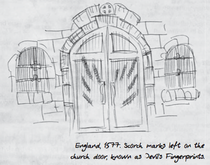
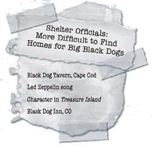

JOHN WINCHESTER'S JOURNAL
JOHN WINCHESTER’S JOURNAL#
CONTENTS:
1983#
1983#
November 16:#
I went to Missouri, and learned the truth. And from her, I met Fletcher Gable, who gave me this book and said: "Write everything down." That’s what Fletcher told me, like this new life is a school and I’ll flunk out if I don’t have good notes. Only if I flunk out of this school, I’ll be dead. And the boys will be orphans. So I’m going to go back to where this started.
Two weeks ago my wife was murdered. I watched her die, pinned to the ceiling of Sammy’s room, blood dripping onto his cradle until she burst into flames —looking at me as she died. The week before that, we were a normal family… eating dinner, going to Dean’s T-ball game, buying toys for baby Sammy. But in a instant, it all changed… When I try to think back, get it straight in my head… I feel like I’m going crazy. Like someone ripped both my arms off, plucked my eyes out… I’m wandering around, alone and lost, and I can’t do anything.
Mary used to write books like this one. She said it helped her remember all the little things, about the boys, me… I wish I could read her journals, but like everything else, they’re gone. Burned into nothing. She always wanted me to try writing things down. Maybe she was right, maybe it will help me to remember, to understand. Fletcher seems to think so.
Nothing makes sense anymore… My wife is gone, my sons are without their mother… the things I saw that night, I remember hearing Mary scream, and I ran, but then… everything was clam, just for a second —Sammy was fine— and I was sure I had been hearing things —too many horror movies too late at night. But then there was the blood, and when I looked up, my wife…
Half our house is gone, even though the fire burned for only a few hours. Most of our clothes and photos are ruined, even our safe —the safe with Mary’s old diaries, the passbooks for the boy’s college accounts, what little jewelry we had… all gone. How could my house, my whole life, go up like that, so fast, so hot? How could my wife just burn up and disappear?
I want my wife back. Oh God, I want her back.
I thought at first that we would stay. Mike and Kate helped me take care of the boys at first, and Julie’s been great too, but I tried to tell them —tell Mike— what I think happened that night. He just looked at me, this look… like he’s sure I’m crazy. He must have told Kate something too. Out of nowhere she said the next morning, I should think about seeing a shrink. How can I talk to a stranger about this? I never saw shrink for everything I went through in the Marines, and I got through that. My friends think I’m going insane. Who knows, maybe I am…
The police quit on the case as soon as they couldn’t pin it on me. They don’t care that she was on the ceiling, they don’t care about the blood on her stomach or about any of the things I’ve seen since then. They want a tidy answer. Doesn’t matter to them whether it’s the right one. The last time I talked to them, a week after she died, they asked me the same questions they asked me the night of the fire. Where was I? How was my relationship with Mary in the weeks prior to the fire? Any problems with the boys? I can tell where they’re going.
Mary’s uncle Jacob had a funeral for her in Illinois, where she was from. I didn’t go. Why? There was nothing to bury, and I don’t think I could have listened to what anyone there would have said. I’ve been drinking too much, trailing off in the middle of sentences. I hear things at night while I sit in Sam and Dean’s room. Everything lately feels like those instances when you remember a dream a few days after you had it, but then you can’t remember if it was a dream or if it actually happened. I keep going over that night in my head… why did I ever get out of bed? I left my wife by herself to go watch TV, and she died. I’m so sorry, Mary.
Dean still hardly talks. I try to make small talk, or ask him if he wants to throw the baseball around. Anything to make him feel like a normal kid again. He never budges from my side —or from his brother. Every morning when I wake up, Dean is inside the crib, arms wrapped around baby Sam. Like he’s trying to protect him from whatever is out there in the night.
Sammy cries a lot, wanting his mom. I don’t know how to stop it, and part of me doesn’t want to. It breaks my heart to think that soon he won’t remember her at all. I can’t let her memory die.
Woke up yesterday morning with a nasty hangover… Wasn’t in the mood to do much of anything, much less have a heart-to-heart with Mike, who jumped on me the second I walked into the kitchen. I guess that’s his right, since it was his house. He was going on about how I have to get myself together, for the boys… but he seemed more concerned about the garage than anything else. Accusing me of phoning it in, you’ve barely been in to work… No kidding I’ve barely been in to work… My wife is dead, something horrible happened to her, maybe my boys are at risk too… how can I forget about all that and go to work, for God’s sake?
Anyway, I told him he could have it. That stopped him cold. "You’re telling me that you’re gonna give up your life’s work over this?" Watch me, Mike. It’s yours.
I walked out of the house with Mike’s check in my hand. He wasn’t so worried about me that he wouldn’t let me go. Do I blame him? I don’t know, I took the boys back to Julie’s and went to the first check-cashing place I could find. Walked out with enough cash to fill the back of the car with security. Two 12-gauges —Winchester 1300 pump and Stevens 311 side-by-side, Spread of sidearms— good old Browning 9 mm, .44 Desert Eagle, snub Ruger SP101, and a little pocket .22. That’ll do for a start.
Haven’t ever written anything this long in my life. Hope I never do again.
Went to see Missouri for the second time, and I can’t explain it… it was like we’d been friends for years. She knew every detail, not just of my life, but also of me… my thoughts… fears. She was the first person who didn’t look at me like I was crazy wen I told her my story… she just listened and nodded, and then she told me she believed me.
She also said that if I wanted answers, I’d need to make a sacrifice. A blood sacrifice. So I pulled out one of my own fingernails, like I did that every day. She had a vision, and we found a bloody mess in a neighbor’s house along with the words WE’RE COMING FOR THE CHILDREN written in blood. I don’t remember anything between that and finding Sam and Dean safe back at Julie’s, thank God, but Julie… Julie was dead. Something just tore her apart. Missouri found a tooth in her body, I tried to draw it but I can’t draw. I took the boys, said good-bye to Missouri, and got the hell out of Lawrence. If I never go back, it’ll be too soon.
Not for Dean, though. The first thing he wanted to know was when we would go home. But we don’t have a home anymore, Dean. The sooner you get used to that, the better. We don’t have a home until we find what killed your mother.
First stop, Eureka. Fletcher said we should start there.
November 19:#
I’m going to try to write this down just as it happened, no matter how unbelievable. Because if I can’t believe it myself —if I can’t rationally write down what I saw— how is anyone else ever going to believe it?
Jacob showed up looking for the boys. I talked him into coming with me to a cemetery where I thought there might be some answers, and I got him killed. The hellhound —that’s what Fletcher calls it— came out of a crypt and it tore holes in him like I haven’t seen in a human being since Vietnam. Then H was there, I don’t know who he is, but he saved my life like I couldn’t save Jacob’s. But he wouldn’t let me take Jacob to a hospital. He said Jacob was dying, and that whatever we were looking for, it was keeping him alive to prolong his suffering. I didn’t want to believe him, but he’d been right about what happened up until then… There was nothing we could do, H said, and God help me I went along with him, and I stood there and watched while my car rolled into a quarry with Jacob dying inside.
And all H said was, "Guess you got a new car." That cold-blooded bastard. I may learn from him, but I’ll never like him, and I’ll never trust him. He started talking about demons, Hellhounds, demons…
I let Jacob die. Could I have saved him? Maybe not, maybe H was right. But I didn’t even try. What am I becoming? I always tried to conduct myself so that if the boys asked me why I did something, I wouldn’t have to lie to them. But what am I going to say if they ever ask me about their uncle Jake?
November 20:#
I killed a man in cold blood tonight.
No, I killed a shapeshifting monster tonight to protect all of the people who don’t know things like that exist. But it would have looked like a man to any of those people. And Dean saw it happen.
It looked like Ichi, a hunter H took me out with. We were looking for a heeler, a kind of… something. Not a man. It attacks, kills, then springs away before anyone can react. Springheel Jack, Jack the Ripper, was a heeler, according to H. But H is the same guy who had me roll Jacob into a quarry, still alive. He was going to die. I know he was going to die. But he was still alive.
And then tonight, Dean walked out of the roadhouse right when I put the final bullet into the shapeshifter’s head. And he said, "Why’d you kill him, Dad?"
How am I supposed to answer that? Because he wasn’t a man, he was a monster who looked like a man? My boy walked out the door and saw me shoot someone in the head. Maybe I’m the monster who looks like a man.
Back up. Write everything down.
H said he was going to start showing me the ropes. There are people who hunt monsters. They have a kind of network, moving through places like Bill and Ellen’s roadhouse. Bill is a hunter, and they have a little girl, Jo. She’s not much older than Sammy. The hunters swap stories about what they’ve seen. They’re all damaged, broken. They hate the things they hunt. I’m just like them.
Ellen’s niece watched the boys while H took me and Ichi out looking for this shapeshifter. Mary, you know I would never leave the boys with strangers I couldn’t trust. You know that, right? I never would.
November 21#
The boys are with Pam and Bill in Elgin. I haven’t spent a whole night away from them since Mary died, and I can feel it like a hook in my gut, wanting to get back to them, protect them. But H says I need to talk to Mary again, and if he can make that happen…
He goes on about demons. A demon killed his wife, he says, and just expects me to believe it. But what he looks like to me is someone who let grief turn him into a monster. Whatever happened to his wife, it doesn’t excuse what he’s done. And I can’t let myself turn into him. I’m not a hunter. I’m a husband and father who wants revenge for his wife.
Here’s what I wish I could say to Dean —Your brother’s too young to understand any of this, but you’re beginning to. And that scares me. Since your mother died, I’ve seen unspeakable things, and now you’ve seen them and that’s my fault. I feel the darkness of the road I’m traveling on now. It’s not a place for you. One day you’ll see— I had to leave you today… but when I’m done, I promise you; the day will come when I never have to leave you again. Until then, I can only pray that you’re strong enough to look after Sam. One of us has to be.
November 24:#
We’re on the way to somewhere, H and me, but I’m the rookie and I don’t get to ask where. He says he’s taking me to meet someone who’s going to let me talk to Mary, but before that we need to do a couple of things.
A hunter never passes up a hunt.
Never.
This is what H says. So tonight we took on a strange kind of undead thing. H said it was a revenant, maybe? I don’t know what that is. Yet. I’ll find out.
People called it Doc Benton. He wanted to live forever, and when he couldn’t make alchemy work, he turned to organ theft instead. He kept himself alive by replacing each of his organs, as they failed one at a time, with organs harvested from unlucky locals. According to H, this has been going on since 1816. The doc was trouble, until I took him apart with a chainsaw after H burned the corpse of his most recent victim. Lesson: burning the victim weakened the doc by depriving him of the power he’d gotten from those organs. According to H, you can solve a lot of problems with gasoline and a match.
I need to learn more about revenants. I need to learn more about everything.
November 25:#
Today, in a town called Blue Earth, Minnesota, I met a crazy priest who brought Mary to me. His name is Jim, but what he did wasn’t like any church ritual I’ve ever seen, and I doubt he learned it in a seminary. He cut himself, and his blood turned into fire, but it didn’t burn him. And then the fire turned into Mary.
Mary.
She said my name. I think she said some other tings too, but hearing her voice say my name again… I can’t describe what that was like. But it only lasted a few seconds and then she turned into a… I don’t know. Like the Black Shuck, a devil dog. A hellhound. It spoke to me, and said, "Soon you will come to me."
After it was gone, Jim looked at the hellhound’s tooth. There are numbers on it: 1127. Mary died at 11:27, according to the police report. H and Jim agreed that the number were some kind of coordinate carved into the tooth, but what does it mean?
Written in blood: In olden times in the West people used to say "I put my hand and seal" on a document when signing it. In the East this was literal in some cases. The emperor of Japan in ancient days "signed" important documents by dipping his hand in blood and putting a full bloody handprint on the page. In the history of pacts with the Devil, people were supposed to sign their names in blood. I have seen a couple of alleged pacts from earlier centuries and neither, as far as I can tell, was signed in blood, though they do bear signatures of people. Blood undoubtedly stressed the seriousness of the signing. You were giving away your soul. "The Blood Is the Life."
November 27:#
1,700 miles in 24 hours flat, me and H handing the wheel back and forth, from Blue Earth to Tempe. Fletcher Gable. He showed us a map of cemeteries —Devil’s Gate, he called them. Places where demons can get through our world. I don’t know about demons, but the map was divided into sectors, and cemetery #112 in Zone 7 was in Hope, Colorado, near the Four Corners.
I don’t know how to explain what happened there. The Fore Inn, set on the edge of a town full of dead bodies, hallucinations… we found the inn, and there was the hellhound, the Black Shuck, and it came to H like a spaniel. He said he didn’t kill Mary, but he set the dog on me, and said he knew "some of the players involved." But they weren’t demons, he said. I killed the dog, and then H changed his whole tack. Said that everything he’d done, even siccing the dog on me, was a way to get me to hunt. He said he wasn’t H, he was something else in a hunter’s body. A man’s body. All I could thing of was shooting the shape-shifter outside the roadhouse with Dean as a witness. I killed H, and I burned the hotel. I’m writing this at a rest stop on I-76 outside Julesburg. I killed H, and I’ll goddamn well hunt, all right, I’ll hunt, and the boys will hunt, an we will find whatever killed Mary and we will send it to Hell. And on the way, we will kill every monster and ghoul and ghost and demon and anything else. My boys will not grow up to experience what I have. They will not lose what I have lost.
This black dog, or the divel in such a likenesse (God hee knoweth al who worketh all,) running all along down the body of the church with great swiftnesse, and incredible haste, among the people, in a visible fourm and shape, passed between two persons, as they were kneeling uppon their knees, and occupied in prayer as it seemed, wrung the necks of them bothe at one instant clene backward, in somuch that even at a moment where they kneeled, they strangely dyed.

November 29:#
We’re gone from Elgin. Where to, I don’t know. Wherever I can learn what happened to Mary, and kill whoever didi it. The hunters are out there. One of them must know something about what happened to her. I’ll head back to roadhouse first. Bill and Ellen will let us stay for a while. After that, who knows?
Never been much for books, but then I never was much for keeping a journal, either. Things have changed. I started looking for old books like Fletcher has, like I saw some of the hunters reading at the roadhouse. I need to learn. Know your enemy. And I started digging around libraries. I’m collecting old police files, going through microfiche… looking for any fires, arsons, with similar MOs to our fire. I’m gonna find this thing that killed my wife, and when I do… God forgive me…
December 11:#
Sammy has finally started sleeping through the night, and now that Dean shares a bed with him, he’s out like a light too. But me… I close my eyes and she’s there. It always starts the same, I’m seeing her as she was before that night, beautiful and happy and alive. And I’m not seeing it, I’m living it, it’s like I’m there… it’s so real, I know I can reach out and touch her. And so I do… I reach out… and suddenly I’m back to that night, to the blood and the fire and Mary, Mary is on the ceiling, and how did she get on the ceiling… she can’t be on the ceiling…
Here’s the weird part. When I wake up, sweating and panting… I swear there is something there. I can feel it, hovering over me, over my boys. It’s watching, it’s watching, I think it’s even mocking me… You couldn’t stop this. You couldn’t keep her safe. You can’t keep them safe.
December 14:#
I actually fell asleep last night… then woke up in a cold sweat five minutes later. Feeling that presence again… and thinking. I’ve been reading about fires, how they start, how quickly they spread… but one of the books talked about strange fires, fires with no explanations… it said that some people believe fire can be controlled by certain evil entities, beings, and used to harm people. It’s crazy, the stuff of fairy tales… when I went back to Sammy’s room that night, when I tried to get to Mary… the fire leaped out. Leaped out at me… like it had a purpose, like it wanted to keep me away, to stop me from reaching her. Like someone was controlling it.

December 20:#
I’m beginning to understand that there’s nobody else but me. Other hunters have seen things. A guy named Frank Gutierrez told me with a straight face that Route 666 is thick with devil dogs. But every hunter’s got a different story, and none of them have seen exactly what I’ve seen. If I want answers, I’m going to have to find them myself. Been reading about black dogs. Black Shuck. Old English scucca = demon. Also known as barghest, as a death omen.
Black dogs haunt roads. Sometimes they have a headless woman with them, or are headless. To see them means you will have a death in the family. Most of the written stories are British, but I’ve been asking around a little. Everybody’s got a black dog story: in Macon County, Tennessee; Meriden, Connecticut; Long Island, Oregon.
December 25:#
Didn’t sleep again last night. Woke up in a cold sweat and realized it was Christmas. Where’s Mary? That was my thought all night, and it stayed in my mind all day. Christmas without my wife seems unreal. Our celebration was clumsy… a crooked two-foot-tall plastic tree, a bunch of junk food stuffed in the stockings, and a pile of sports equipment for the boys… football, basketball, soccer ball. My attempt to bring back some normalcy. Already Dean is too big for T-ball, this year we’ll be going to real Little League games. Or rather, I’ll be going to the games. Alone.
Mary will never see Dean hit a home run. She’ll never see Sammy walk, or hear him say his first words. She won’t take Dean to his first day at school, or stay up all night with me worrying the first night he takes the car out. It’s not right that she’s not here, and that’s all I could think about today. I’m so angry I can barely see straight —I want my wife back.
The police have officially declared our case closed. What a Christmas present, huh?
December 29:#
Back at the roadhouse. We’re going to stay here for a while. I can’t just drive around in circles. The boys need a place they can think of as home, even if it doesn’t last. And I need a place where I can learn what hunters do. The only holiday spirit I have is bloodlust. I want to kill. The last time I remember feeling like this was Vietnam. But I think we can stay here for a while to get our feet on the ground. Or I can get my feet on the ground, anyway; I don’t know what it will take for the boys to feel normal again. Dean hasn’t been the same since he saw me kill that shape-shifter. I don’t know how to talk to him about it. He’s no even five years old. Most kids his age don’t even have a clear idea what death is, and he’s seen it up close and personal. What do I say to him? How old does he have to be before I tell him the truth?
1984#
1984#
January 1:#
Today a new year begins. Mary loved this time of the year; she loved the idea of a fresh start for everyone. She always made a resolution, once a year, and unlike most people, she kept hers. And every year she tried to talk me into making one, but I could never see the point. I wish I could have seen her diary. Maybe it would help me remember her. Maybe it would clue me in to some of her secrets. Maybe that’s the point of a diary. Keep your stories, your life, from dying. So that other people don’t forget.
God I wish the boys could have known Mary longer.
This year I’m finally making a resolution. I’m going to find out what happened to my wife.
January 24:#
Dean turns five today. I was thinking about where we’re going to be in the fall, because he should start school. Then I realized that I can’t leave him at school. Anything could happen. Maybe a place that has half-day kindergarten. Maybe that I could do. I know I should. I know he should be able to run around with other kids, who don’t know how to field-strip the Browning. Well, Dean doesn’t either, yet. But he’s learning. He’s got a talent for guns. I can see it already. And he’ll need it.
May 2:#
Sammy is a year old. We spent his birthday in the mountains because I had to meet a guy named Daniel Elkins. The hunter culture is weird about how it breaks in new blood. Everyone you meet says you should go meet someone else, and learn something else, and everytime you meet someone else they take you out to hunt their favorite kind of monster. This guy Elkins lives in a cabin out in the middle of nowhere in Colorado, and according to him, he’s the greatest vampire hunter alive.
Vampires.
They’re real. I’ve never seen one, but Daniel says they’re real, and I believe him. He also says that the hunter’s journal is for research as much as for recording day-to-day whatever. So I copied this from a book called the Harleian Miscellany:
We must not omit Observing here, that our Landlord seems to pay some regard to what Baron Valvasor has related of the Vampyres, said to infest some Parts of this Country. These Vampyres are supposed to be the Bodies of deceased Persons, animated by evil Spirits, which come out of the Graves, in the Night-time, suck the Blood of many of the Living, and thereby destroy them.
Vampires, four hundreds years ago. There are other records, even older. Peter Plogojewitz, the Shoemaker of Silesia…
May 17:#
This would have been our sixth anniversary. Six is iron. Sammy took his first steps yesterday. He walked toward Dean, then fell flat on his face and started crying. Life is tough, kid. Do I sound like a proud dad? I am.
November 2:#
Mary has been dead for a year. I’m never going to be over it, and I wouldn’t want to be. But I’ve spent the last year getting better at revenge.
Maby this is a good time to write down everything I’ve learned about Lawrence.
- Corner of 8th and Massachusetts: Ghost, woman in nineteenth-century dress.
- 7th and Massachusetts: Eldridge Hotel. Word is the city’s going to rebuild it, so maybe the haunting will change —but Missouri says there’s something about the fifth floor. She gets visions more easily there, like the spirit world is closer somehow.
- Stull Church: abandoned since 1922. No roof, but you can stand inside it in a thunderstorm and not get wet. Rain will not fall on it. A crucifix still hangs on the wall, and it turns upside down when you approach.
- Stull Cemetery: Devil said to appear there twice a year, on the vernal equinox and Halloween. He is visiting the grave of one of his children, born of a human witch and dead after a few days.
- Haskell Institute: children’s cemetery near Taminend Hall, full of uneasy ghosts. Another ghost, a coed suicide, haunts the basement of Pocahontas Hall. Hiawatha Hall full of bad echoes, the sorrow and pain of generations of abused children. How many of them died?
I’m learning about hauntings. Everyone I’ve talked to and read thinks they know evertything about hauntings, but they all say something different. Or so vague that it doesn’t mean anything. I read this and that, and tell myself that if I keep doing it, I’ll start to see the patterns.
In the world of spirits is always a very great number of them, as being the first sort of all, in order to their examintion and preparation; but there is no fixed time for their stay; for some are translated to heaven and others confined to hell soon after their arrival; whilst some continue there for weeks, and others for several years… Ebenezer Sibly
This reminded me of Doc Benton. From William of Newburgh:
As soon as this man was left alone in this place, the devil, imagining that he had found the right moment for breaking his courage, incontinently roused up his own chosen vessel, who appeared to have reposed longer than usual. Having beheld this from afar, he grew stiff with terror by reason of his being alone; but soon recovering his courage, and no place of refuge being at hand, he valiantly withstood the onset of the fiend, who came rushing upon him with a terrible noise, and he struck the axe which he wielded in his hand deep into his body. On receiving this wound, the monster groaned aloud, an turning his back, fled with a rapidity not at all inferior to that which he had advanced, while the admirable man urged his flying foe from behind, and compelled him to seek his own tomb again; which opening of its own accord, and receiving its guest from the advance of the pursuer, immediately appeared to close again with the same facility. In the meantime, they who, impatient of the coldness of the night, had retreated to the fire ran up, though somewhat too late, and, having heard what had happened, rendered needful assistance in digging up and removing from the midst of the tomb the accursed corpse at the earliest dawn. When they had divested it of the clay cast forth with it, they found the huge wound it had received, and a great quantity of gore which had flowed from it in the sepulchre; and so having carried it away beyond the walls of the monastery and burnt it, they scattered the ashes to the winds.
Everyone agrees that you have to burn them to make sure they stay dead. Should have burned Doc Benton, too, but I’m guessing the chainsaw did the trick.
本博客所有文章除特别声明外，均采用 CC BY-SA 4.0 协议 ，转载请注明出处。博客内相关作品衍生小说的在线阅读排版尚未进行二次校对，格式与内容可能存在疏漏，欢迎浏览者提出指正。如对文章内容存在疑问，请发送邮件至联系邮箱：jinsy.liu@gmail.com